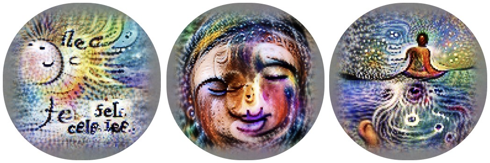

La tesis y el resultado
Supervisar con lenguaje, no con etiquetas
Predecir qué texto acompaña a qué imagen, con 400 millones de pares imagen–texto de internet.
Después, el lenguaje nombra conceptos visuales, incluso nuevos: clasificar sin entrenamiento previo.

76,2 %
en ImageNet sin entrenamiento previo: iguala a la ResNet-50 original sin usar ninguno de sus 1,28 millones de ejemplos etiquetados.
Evaluado en más de 30 conjuntos de datos. Con plantillas y conjuntos de 80 frases, casi 5 puntos más en ImageNet.
El enfoque
Entrenamiento contrastivo y clasificación con frases

Lo que el propio artículo reconoce
Limitaciones e impacto
- Sin entrenamiento previo, CLIP suele apenas competir con un clasificador lineal sobre ResNet-50; llegar al estado del arte pediría unas 1000 veces más cómputo.
- Consultaron conjuntos de validación durante el desarrollo: no es un zero-shot puro.
- Muchas tareas son difíciles de especificar solo con texto.
- El diseño de las clases cambia el sesgo: con etiquetas ofensivas en la lista, personas de 0 a 20 años caen en ellas el 32,3 % de las veces; al agregar la clase «niño», el 8,7 %.
- Identifica celebridades: 59,2 % entre 100 candidatos. Riesgo de vigilancia.
Discusión
Tres preguntas
- En el Laboratorio 4B, ¿cambiar las frases cambió los resultados? ¿Escribir las clases es diseñar características, como el umbral del 4A?
- El artículo dice que el diseño de las clases cambia el sesgo. ¿Qué clases faltarían o sobrarían en la inspección de su organización?
- Con la guía de decisión: ¿en qué problema de su proyecto usaría CLIP, y en cuál no?
Próxima lectura: Alammar (2018), The Illustrated Transformer. Entregas al inicio de la semana 3.
Referencias del club de lectura
Para profundizar
- Radford, A., Kim, J. W., Hallacy, C., Ramesh, A., Goh, G., Agarwal, S., Sastry, G., Askell, A., Mishkin, P., Clark, J., Krueger, G. y Sutskever, I. (2021). Learning transferable visual models from natural language supervision. ICML 2021, PMLR 139, 8748–8763. PDF · material suplementario
- OpenAI (2021). Repositorio de CLIP, con el código y la ficha del modelo. github.com/openai/CLIP · ficha del modelo